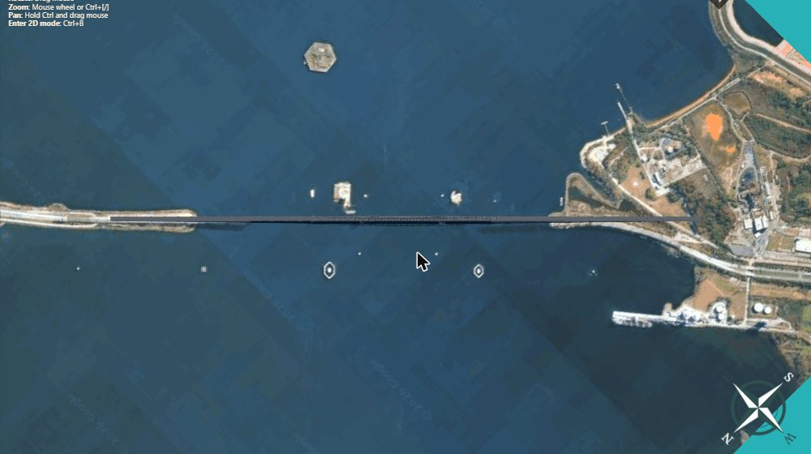
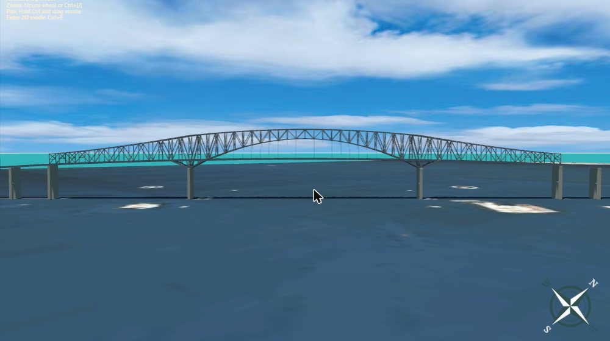
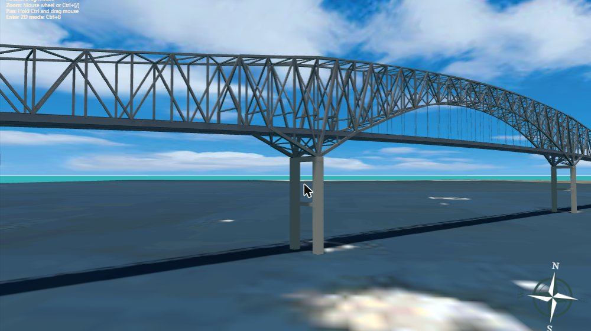
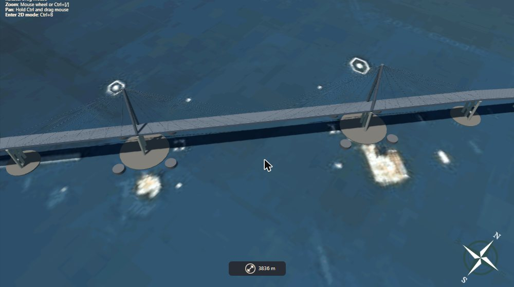
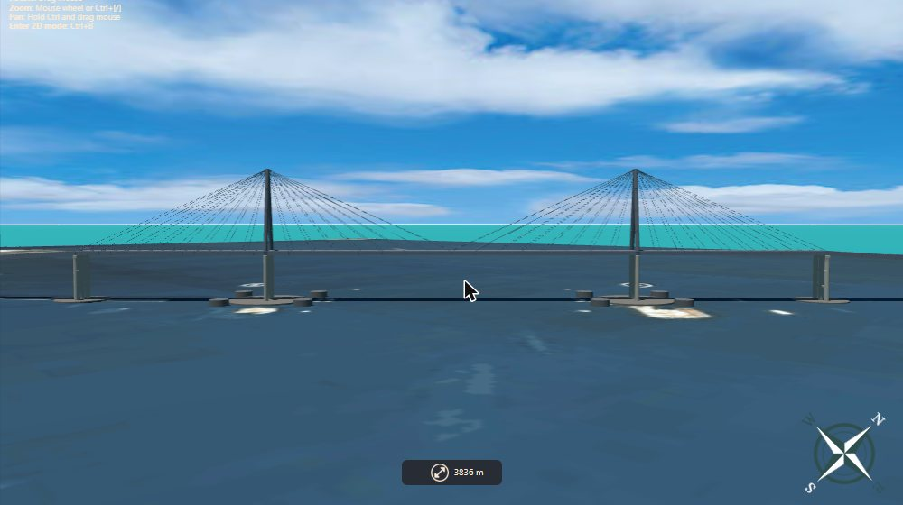

Redesigning the Key Bridge with AI
Model the bridge that collapsed in Baltimore, find out why it was vulnerable, and design its replacement
At 1:28 in the morning on March 26, 2024, the container ship Dali lost power as it left the Port of Baltimore and struck a pier of the Francis Scott Key Bridge. The main spans fell into the Patapsco River within seconds. Six men repairing the roadway were killed.
Could a student work out why one ship could bring down a bridge that had stood for 47 years, and then design something better? A few years ago that would have taken a structural engineering course and a commercial analysis package. This article shows it done in two chats with the AI Assistant in Aladdin, in plain language. The first chat models the bridge as it stood from 1977 to 2024 and tests it. The second designs a replacement at the same crossing, sized to the published plan for the real one.
Bridges in Aladdin are parametric structures that a structural engine can load, shake and push to failure. An earlier article, Building bridges with AI, followed the assistant as it designed the Brooklyn Bridge one stage per turn: site, structural form, main dimensions, alignment and details. Both chats here use the same five stages, then keep going. This is the first result:
The bridge that collapsed
The session starts with one request, and the assistant works the bridge out a stage at a time. Three times it needed correcting, and those turns are the most instructive part. In short, it went like this (the assistant’s replies are shortened; the full text is in the file):
- YouLet’s build the Francis Scott Key Bridge in Baltimore, as it stood before it collapsed in 2024, step by step, from scratch, one stage per turn.
- AssistantStage 1 — the site. The scene is set at the Key Bridge crossing in Baltimore, with satellite imagery and real terrain. Shall we choose the structural form?
- YouGood. Next stage.
- AssistantStage 2 — the form. A steel continuous through truss. We’ll model it as a cantilever truss.
- YouIn photos, the truss arches highest over the middle of the main span and the roadway hangs beneath it there. A cantilever truss is shallow in the middle. Is there a better form for it?
- AssistantYes, and I need to correct my last stage. The bridge was an arch‑shaped continuous through truss, with a 1,200 ft main span between two 720 ft side spans. That is the better form for our model.
- YouGood. Next stage.
- AssistantStage 3 — the dimensions. A 366 m central span flanked by 219.5 m side spans, about 805 m in all, with a roadway about 18.6 m wide. Stage 3 set.
- YouNothing is built yet. Build the bridge now with those dimensions and the arch‑shaped continuous truss.
- AssistantThe bridge is built: 805 m long, 18.6 m wide, three spans, an arch‑shaped continuous truss 45.7 m high, the deck 56 m up. It is not yet aligned to the crossing.
- YouGood. Next stage: align it to the real crossing.
- AssistantStage 4 — alignment. Aligned to the mapped crossing at 44.9° from east. The mapped segment is only 276 m long, though, so this confirms the direction, not the full footprint.
- YouThe direction is right, but that mapped segment is only the approach stub that survived, on the northeast shore. The middle of the main span was over the channel at 39.2169 N, 76.5283 W. Move the bridge there and keep the bearing.
- AssistantMoved the bridge’s midpoint to the channel, keeping its 44.9° bearing.
- YouGood. Next stage.
- AssistantStage 5 — details and check. Under traffic the deck deflects 101.2 mm and the most heavily loaded member is at 61% of its capacity. That’s a model check, not an engineering certification.
Three corrections
- The wrong truss. The assistant first chose a cantilever truss, which is tall over the piers and shallow in between. A look at any photo says otherwise, and when that was pointed out it corrected itself and gave its source.
- Nothing built. In stage 3 it announced the dimensions and said “Stage 3 set,” but the scene was still empty. One sentence fixed it.
- The wrong place. The map no longer has the bridge, only a 276 m stub of approach on one shore. The assistant centered the bridge on the stub, 800 m from the channel, and said plainly that it could only vouch for the direction.


The arch‑shaped truss is new in Aladdin. We added it for this bridge, as “Arched continuous” in the bridge dialog, after a first model built with the cantilever form looked nothing like the photographs. The assistant made the same mistake in this chat and recovered the same way, by being asked to look.
| Dimension | Real bridge | AI’s model |
|---|---|---|
| Main span | 366 m (1,200 ft) | 366 m |
| Side spans | 219.5 m (720 ft) each | 220 m each |
| Deck width | about 18.6 m | 18.6 m |
| Clearance over the channel | 56 m (185 ft) | 56 m deck at the piers, cresting 9 m higher |
| Overall length | 2,632 m | 2,625 m with approaches |
The shape is the interesting part. The top of the truss rises from each end toward the middle of the main span. The bottom of the truss rides along the roadway through the side spans, dives below it to sit on the two river piers, and then arches up over the roadway across the channel. In that stretch the deck does not sit on the truss at all. It hangs beneath it on slender suspenders.

It passes every check
The finished bridge is a structural model, so the same chat can test it. Four more turns did:
- YouWhat are its natural frequencies?
- AssistantThe lowest is a lateral sway at 0.264 Hz, a period of about 3.8 seconds. The first vertical bending mode is third, at 0.551 Hz.
- YouWhat does a 45 m/s wind do to it?
- Assistant15.67 MN of drag, 149.6 mm of lateral drift and 62% maximum demand‑to‑capacity. Flutter onset is estimated at 362 m/s. There is a vortex‑shedding warning for several modes between 14.3 and 34.7 m/s: a vibration concern, not by itself damage.
- YouCould it survive an earthquake with 0.1 g of ground shaking?
- AssistantFor transverse shaking the check gives 61% peak demand‑to‑capacity, so the modeled members pass. It checks transverse shaking only; longitudinal shaking could give a different result.
- YouIt passes every check. So why did the whole main span fall when a ship hit one river pier in 2024?
- AssistantBecause “passed every check” meant it passed only the load cases those checks tested, not a ship collision. The NTSB found that the Dali struck Pier 17 at about 6.4 knots, with an impact force more than four times the pier’s lateral capacity. The pier failed; with that support gone, the continuous truss lost a critical part of its load path and the spans collapsed in succession. Our model’s passes say nothing about that scenario.
That last answer is the lesson of the whole exercise. The bridge was not weak. It carried its own weight and traffic with its most heavily loaded member at about 60% of capacity, and it passed a 45 m/s wind and a 0.1 g earthquake by similar margins. It was built for every load on its designers’ list. A container ship nearly 300 m long was not on the list.
A continuous truss is one rigid structure over all of its supports. That is efficient: each span helps carry its neighbors, so the bridge needs less steel. It also means there is no second way for the load to reach the ground. Take away one river pier and the main span has nothing to stand on. The National Transportation Safety Board later found that the risk of a catastrophic ship strike was almost 30 times the threshold that current guidance treats as acceptable, and that the bridge’s owner had never run the assessment that would have shown it.
A structural check answers the question you ask it. “Is it strong enough?” and “What could bring it down?” are different questions, and only the second one would have saved this bridge.
A better bridge
The second chat starts from the failure: “Let’s design a replacement at the same crossing, step by step, from scratch, one stage per turn. Make it safer against ship strikes.”
- YouThe Francis Scott Key Bridge in Baltimore collapsed in 2024 when a ship struck one of its piers. Let’s design a replacement at the same crossing, step by step, from scratch, one stage per turn. Make it safer against ship strikes.
- AssistantStage 1. The site is set at the crossing, with satellite imagery and real terrain.
- YouYes. Next stage.
- AssistantStage 2 — the form. A cable‑stayed bridge with a long, clear navigation span. Keeping the towers out of the ship channel reduces the chance of a vessel striking a primary support. That should be backed up by fenders or dolphins around any supports that remain exposed.
- YouYes. For the dimensions, use the published plan for the real replacement where you know it, and build the bridge.
- AssistantStage 3. A 507.5 m main span, two 259 m side spans, a 28 m deck, 70.1 m of clearance and pylons about 112.8 m above the deck. The spans match the published 1,665 ft and 850 ft. It is not yet aligned, and it has no ship‑impact protection.
- YouYes. Align it to the old crossing. Only the approach stubs on each shore are still on the map: use them for the direction, and put the middle of the main span over the channel at 39.2169 N, 76.5283 W.
- AssistantStage 4. Aligned with the old crossing’s surveyed direction, with its midpoint at that position.
- YouYes. Next stage.
- AssistantStage 5 — structural check. Peak stress utilization is 46% and the deck deflects 328.5 mm under traffic, 1/1,545 of the span. Ship‑strike safety is not verified: the model has no fenders or dolphins.
- YouThen let’s build the protection. Put a low rock island about 110 m across around the foot of each pylon, a smaller one about 70 m across at each end of the main bridge, and four free‑standing dolphins about 25 m across in the water around each pylon. Keep the channel between the two pylon islands clear.
- AssistantAdded four rock‑island platforms and eight dolphin markers. These are simplified placeholders, not engineered rock armor or ship‑impact‑rated dolphins.
The assistant chose the form for the right reason. A cable‑stayed bridge can span much farther than a truss, so its supports can stand back from the channel. Asked for the real plan’s dimensions, it found them and cited the U.S. Coast Guard notice they came from:
| Dimension | Published plan | AI’s model |
|---|---|---|
| Main span | 1,665 ft (507 m) | 507.5 m |
| Back spans | 850 ft (259 m) | 259 m |
| Main bridge length | 3,365 ft (1,026 m) | 1,025.7 m |
| Pylon height above the water | 600 ft (183 m) | 182.9 m |
| Clearance over the channel | at least 230 ft (70 m) | 70.1 m |
Only those figures come from the plan. The A‑shaped pylons, the width of the deck, the layout of the stays, the islands and the dolphins are the session’s own. The real project was put out to tender again in 2026, so its details may still change.
Protection, and checking it
The islands landed exactly under the pylons and the end piers. The dolphins took four more turns, and the chat is worth reading for them:
- Too close. The first dolphins sat right against the islands. Asked to move them out, the assistant did.
- A requirement. The published plan calls for at least 1,100 ft (335 m) of clear water between the pier protection on the two sides. Asked whether the layout met it, the assistant measured 401 m between the islands and said yes.
- A wrong yes. It had not counted the dolphins, which left only about 283 m. Told so, it moved all eight back, but stacked two of them on top of each other.
- Fixed. One more turn put them 195 m and 305 m from the middle of the span on both sides, mirrored, with about 365 m of clear channel between them.

The assistant answered the question it was asked, about the islands, and the answer was right. The layout still broke the rule. Checking the scene yourself, with the number in hand, is what caught it.
Old and new, side by side
The same four test turns were run on the replacement. These are the assistant’s numbers from the two chats:
| 1977 bridge | Replacement | |
|---|---|---|
| Structural form | Continuous steel truss | Cable‑stayed |
| Main span | 366 m | 507.5 m |
| Clearance over the channel (published) | 56 m | 70 m |
| What holds up the main span | One truss on two piers | Many stays from two pylons |
| Weight and traffic | 61% of capacity | 46% |
| Wind of 45 m/s | 62% | 50% |
| Earthquake of 0.1 g, transverse | 61% | 72% |
| Lowest natural frequency | 0.264 Hz, lateral sway | 0.270 Hz, vertical bending |
The percentages say how hard the most heavily loaded member is working. On these checks both bridges pass comfortably, and that is the point: nothing in an ordinary structural check separates them. What separates them is the load that is not on the list. The replacement’s pylons stand about 70 m farther from the channel on each side, on islands, and its deck hangs from many stays, not from one truss.

The last turn of the second chat asked what would be different if a ship lost power in the channel today. The assistant’s answer was more careful than the question. It pointed out that the old bridge already had four dolphins, and that the Dali missed all of them and struck the pier. Protection only helps if it stands in the ship’s path and can take the impact. And it would not claim that the islands and dolphins in the model would stop a ship, because nothing in the session tested that.
Method. Aladdin models each bridge as a 3D finite‑element frame and sizes the truss members and cables to the forces they carry. The static check applies the bridge’s own weight and traffic; the wind check adds a steady sideways drag; the seismic check combines the natural modes with a Eurocode 8 design spectrum.
These are simplified teaching models, not the real bridges, and the numbers may change as Aladdin’s solver improves. Aladdin does not simulate a ship striking a pier. The approach viaducts, the islands and the dolphins are drawn but not analyzed.
What a student can do with this
Open either model with the links above. The conversation that built it opens with it, and you can carry it on from where it stops. Hand‑built versions of both bridges are also in Aladdin’s Examples menu, under Bridges. Some things worth trying:
- Ask why. “Why does the truss rise highest over the channel?” “Why does the new bridge need back spans?” The answers are in the model, and the assistant can point to them.
- Change one thing. Make the pylons shorter, the deck wider or the main span longer, then run the check again and see which number moves.
- Propose your own. Would a suspension bridge work here? An arch? Start a new chat at the same crossing and compare.
- Check the answer. Look at a photo, the top view and the numbers yourself. Every correction in these two chats came from doing that.
Conclusion
It is a remarkable thing that a student can now do this. A question about the news became a structural model of a real bridge on its real site, an explanation of why it collapsed and a credible replacement, in twenty‑seven plain‑language turns. The engineering judgment that used to stand between a curious person and a finite‑element model is now something you can ask for.
The two chats also show what the student still has to bring. The assistant picked the wrong truss, announced a bridge it had not built, put it 800 m from the channel and passed a clearance check that the layout failed. Each of those was caught by a short, skeptical remark from someone who had looked. AI can build the bridge. Asking whether it is the right bridge, in the right place, safe against the right thing, is still the designer’s job. That is a good habit to teach, and the Key Bridge is a sobering reason to teach it.
Sources: Francis Scott Key Bridge (Wikipedia) · NTSB press release, November 18, 2025 · NTSB risk finding (ABC News 4) · ENR on the replacement’s main span · ENR on the new design
Related reading: Building bridges with AI · Five ways to cross a river · The bridge that bends
← Back to Aladdin